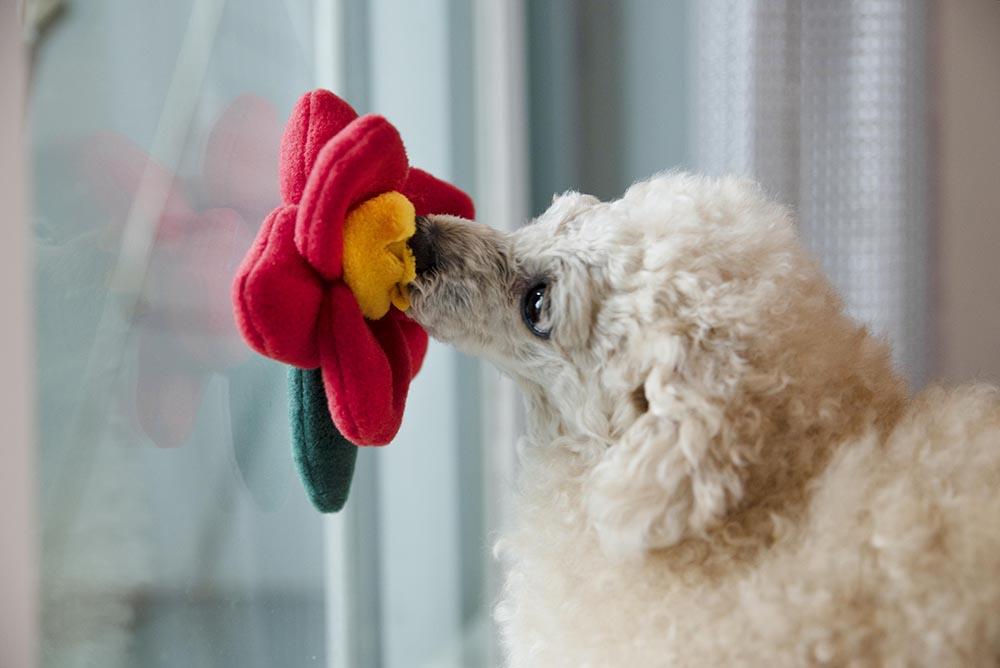

식물카페가 된 거실
리빙
하나, 둘 늘리기 시작한 식물이 이젠 셀 수 없을 만큼 많아졌다. 공간에 어울리는 식물들을 배치하고 보니 의도치 않게 우리집이 식물카페 같다고 해주시는 분들이 많아졌다.^^:: 처음에 거실 창가에 2~3개 키웠는데 이젠 집안 곳곳에 식물이 없는 곳이 없다. 다행인건 아직 지저분하다는 느낌보단 싱그럽다는 느낌이다. 여기서 멈춰야지.... 더 들이
식물집사루루

리빙
하나, 둘 늘리기 시작한 식물이 이젠 셀 수 없을 만큼 많아졌다. 공간에 어울리는 식물들을 배치하고 보니 의도치 않게 우리집이 식물카페 같다고 해주시는 분들이 많아졌다.^^:: 처음에 거실 창가에 2~3개 키웠는데 이젠 집안 곳곳에 식물이 없는 곳이 없다. 다행인건 아직 지저분하다는 느낌보단 싱그럽다는 느낌이다. 여기서 멈춰야지.... 더 들이
식물집사루루
리빙
알콩달콩 중에 1분 언니 알콩이방 알콩이가 선택한 색상은 "민트" 연한 민트계열의 벽지와 커튼 보색대비 레몬빛 침구로 꾸몄다. 달콩이방보다 수치상으로는 가로70cm가 큰데 느낌상으로는 훠~~월씬 크게느껴진다.. 알콩이방에는 드레스룸도 있어서 수납침대가 필요없을것 같아 나름 검색한 이쁜침대를 보여줬지만 굳이 달콩이와 같은걸 하겠다
알콩달콩맘
리빙
인천 청라국제도시 내 베어즈베스트 골프장 단지에 있는 주택은 건축주 성향을 살려 모든 실을 넓게 하는 데 중점 두고 설계했다. 건폐율 한계 안에서 먼저 공용 공간을 최대한으로 넓히고 개인 공간을 구성했으며, 풍경을 가장 잘 볼 수 있게 주택을 배치했다. 글 김솔(㈜더존하우징 인테리어부 과장) 진행 백홍기 기자 사진 더존하우징
전원주택라이프
리빙
안녕하세요. 팔랑팔랑 퀸아망입니다. 문득 데일리 수저와 젓가락 그리고 디저트 포크가 너무 오래된 것 같은데...라는 생각이 들면서 얼마나 된 건지 손가락을 접어보니... 세상에 나 무려 신혼살림이었던 아이템도 있네요. 주방서랍에서 십 년 넘게 누워 있는 포크도 있고 ㅋㅋ...설날은 지났지만, 새해를 맞이하는 기분으로 주방에 있는 커트러리를 싹~
팔랑팔랑 퀸아망
리빙
청소할 때 어떤 도구를 사용하시나요?! 청소를 좋아하지는 않지만 하면 제대로(?) 하려고 하는 편이에요. (몰아서하는편 ㅋㅋ 이제는 조금씩 자주 하려고 노력중) 도구에 관심이 많아 다른 분들이 어떤거 쓰는지 구경하는걸 좋아하고 효과가 좋다하면 구입해서 사용해보는 편이고요. 심플하게 하나만 딱! 두고 쓰면 좋을텐데, 그러질 못해서 ^^;; 나름
켜니다운
리빙
유통기한이 지난 식재료 뽀얗게 먼지가 쌓인 화장품과 향수. 한 번을 쓰지 않고 있는지도 몰랐던 그릇. 나는 이런 것들을 유독 좋아하지 않는다. 사놓고 방치할 바에는 물건을 들이지 말자고 생각하는 편이다. 우리집 주방 인테리어는 미니멀리즘을 추구하는 나의 취향이 반영된 곳이다. 깨끗하게 정돈되어있는 집은 보는 것 만으로도 기분이 좋다. 하
아이스콜라
리빙
새로운 보금자리로 이사를 가면서, 입주 8년차 밖에 안 된 아파트라서, 인테리어를 안할지, 부분만 할지, 전체로 할지 고민하던 중, msk의 한마디. "살면서 인테리어 못 한다" 그래. 살다보면 10년 넘어가고, 내 나이 40이 넘어가면서, 이제 진짜 정착해서 살아야겠다 싶어 다시 한번 올 리모델링을 진행하게 됩니다. 올해로 결혼 13년차, 신혼집을 시작으
호호아줌마
리빙
전셋집 현관 조립식 타일 우드 느낌으로 꾸미기 (내돈내산 현관 타일 셀프 인테리어) 우리 집 현관 바닥은 처음 이사 왔을 때 블랙 매트로 되어있었다. 폭신하고 미관상 크게 나쁘거나 하지 않아서 그대로 두고 사용했었는데, 나름의 현관 셀프 인테리어를 하면서 가벽을 설치하고 나니 그림자로 인해 바닥이 너무 어두워 보였다. 게다가 울집 똥강아지
Mija